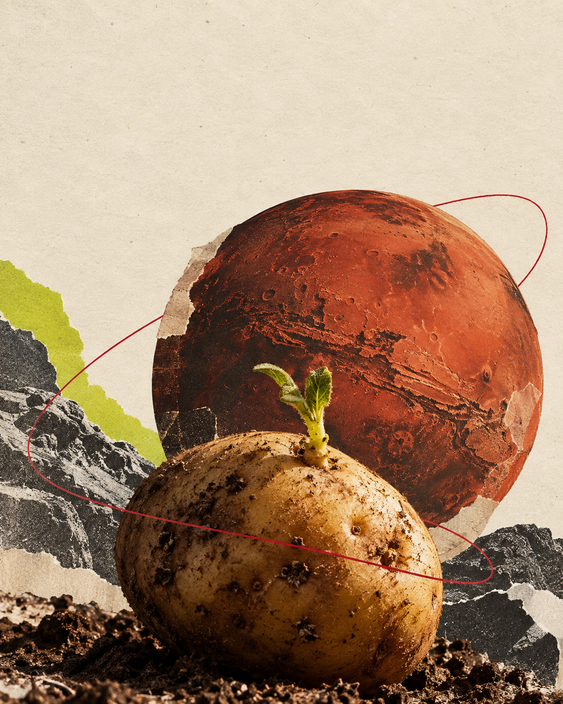

<!doctype html><html lang="pt-BR"><meta charset="utf-8"><title>Marte e batatas · 6</title><link rel="stylesheet" href="issue26.css"><main class="slide exit26"><h2>Uma notícia.<br>Um filme.<br>Uma batata.</h2><svg class="paperstroke" viewBox="0 0 500 240" aria-hidden="true"><path d="M10 200Q160 260 255 105T490 55" stroke="#BE1035" fill="none" stroke-width="4"/></svg><p class="invite">Quer receber a próxima<br>Cereja Flamejante?</p><p class="action">Assine pelo link da bio.</p></main></html>